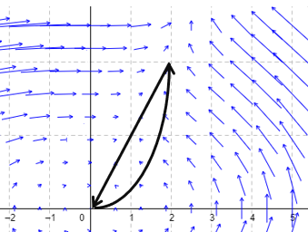
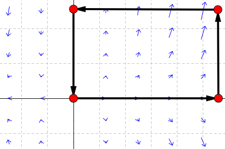

Lesson 42: Green's Theorem
Green’s Theorem gives us another way to find the work done by a vector field around a closed curve. It establishes a remarkable connection between the line integral for the work and a double integral over the region enclosed by the curve!
Let \(C\) be a simple closed curve in the plane, traveled counterclockwise, that encloses a region \(R\). If \(P\) and \(Q\) have continuous partial derivatives, then:
Green's Theorem
Since \(\mathbf{F} \dotp d\mathbf{r} = P\,dx + Q\,dy\), this can also be written as below.
An Example
Consider the vector field \(\mathbf{F}(x, y) = \langle P, Q \rangle\), where \(P(x, y) = -13xy + y^2\) and \(Q(x, y) = x^2\). Through two different methods, find the work done by this vector field in moving a particle counterclockwise along the closed curve \(C\) determined by \(y = x^2\) and \(y = 2x\).

- Use the line integral \(\displaystyle\oint_C \mathbf{F} \dotp d\mathbf{r}\).
- Use Green’s Theorem.
The curves meet where \(x^2 = 2x\), at \((0, 0)\) and \((2, 4)\). Between them, the line \(y = 2x\) is above the parabola. Moving counterclockwise, the particle goes along the parabola \(C_1\) from \((0, 0)\) to \((2, 4)\), and then back along the line \(C_2\) to \((0, 0)\).
Method 1, the parabola \(C_1\): Let \(x = t\) and \(y = t^2\), with \(t\) from \(0\) to \(2\). Then \(dx = dt\) and \(dy = 2t\,dt\), with \(P = -13t^3 + t^4\) and \(Q = t^2\).
Method 1, the line \(C_2\): Let \(x = t\) and \(y = 2t\), with \(t\) from \(2\) to \(0\). Then \(dx = dt\) and \(dy = 2\,dt\), with \(P = -22t^2\) and \(Q = t^2\).
Method 2, Green's Theorem
Both methods give \(\frac{236}{15}\).
An Example
Consider the vector field below. Use Green’s Theorem to find the work done by the vector field in moving a particle counterclockwise around the rectangle with vertices (0, 0), (6, 0), (6, 3), and (0, 3).

Here \(P = x^2\sin x\) and \(Q = 2xy\).
Green’s Theorem avoids integrating \(x^2\sin x\) along the edges of the rectangle.
We know the work done by a conservative vector field around a closed curve is always zero. Combining this with Green’s Theorem gives:
For this double integral to be zero for every region, we need the condition below.
Conservative Field Test
If \(\mathbf{F}\) is conservative, this equation holds. Conversely, if it holds everywhere on a region with no holes, and the partial derivatives are continuous, then \(\mathbf{F}\) is conservative there.